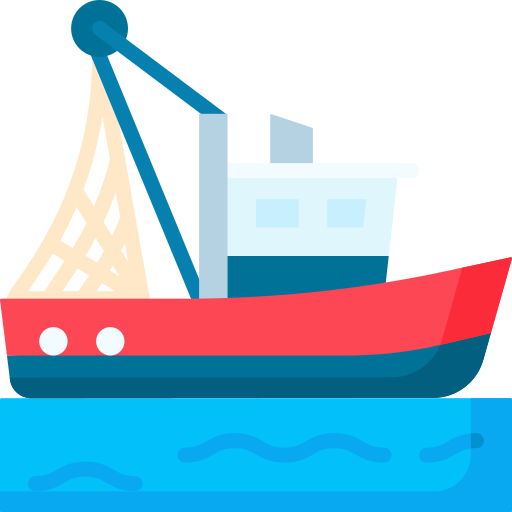

<mat-sidenav-container class="sidenav-container">
  <mat-sidenav #drawer class="sidenav" fixedInViewport
      [attr.role]="(isHandset$ | async) ? 'dialog' : 'navigation'"
      [mode]="(isHandset$ | async) ? 'over' : 'side'"
      [opened]="(isHandset$ | async) === false">

      <div class="logo-container">
                    
      </div>

    <mat-nav-list>
      <a class="nav-link" mat-list-item href="#"><mat-icon>map</mat-icon> Map</a>
      <a class="nav-link"mat-list-item href="#"><mat-icon>table_view</mat-icon> Raw Data</a>
      <a class="nav-link"mat-list-item href="#"><mat-icon>login</mat-icon> Login/Register</a>
      <a class="nav-link"mat-list-item href="#"><mat-icon>logout</mat-icon> Logout</a>
      <a class="nav-link"mat-list-item href="#"><mat-icon>question_mark</mat-icon> About</a>
    </mat-nav-list>
  </mat-sidenav>
  <mat-sidenav-content>
    <mat-toolbar color="primary">
      @if (isHandset$ | async) {
        <button
          type="button"
          aria-label="Toggle sidenav"
          mat-icon-button
          (click)="drawer.toggle()">
          <mat-icon aria-label="Side nav toggle icon">menu</mat-icon>
        </button>
      }
      <span class="app-title">2nd_Mate</span>
    </mat-toolbar>
    <div class="app-container">
      Something in here - Testing! 
    </div>
    
  </mat-sidenav-content>
</mat-sidenav-container>
